新潟旅行（粟ヶ岳・弥彦山）
| 日付 | 2024年4月27日（土） - 2024年4月29日（月） | ||||
|---|---|---|---|---|---|
| 山域 | 越後 | ||||
| メンバー | 家族（妻、長男・10歳） | ||||
| 山行形態 | 子連れ2泊3日キャンプ | ||||
| アクセス | 車 | ||||
| ルート |
|
ついに新潟旅行に行く日が来た。
2020年のGWに新潟の粟ヶ岳に行く計画を立ててから、
コロナやら天候やら他の用事やらで4年連続で流れたこの計画。
当時、息子が小学1年生になり粟ヶ岳に登れるだろうと考えての計画だったが
もう5年生になってしまい、娘はついてこなくなってしまった。
必ずしも粟ヶ岳に深い思い入れがある訳ではないのだが、
計画を立てたからにはやはり登っておきたい。
1日目
まずはキャンプ場に向かう。
今回は中浦ヒメサユリ森林公園でキャンプをする予定だ。
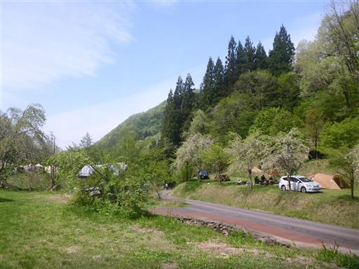
予約不要で早い者勝ちのキャンプ場だが、無事場所を確保できた。
そこそこ広いキャンプ場で設営できるテントの数は多い。
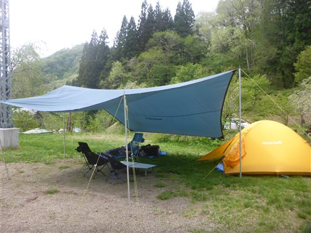
設営を終えたら昼食。魚家という魚料理の店に行く。
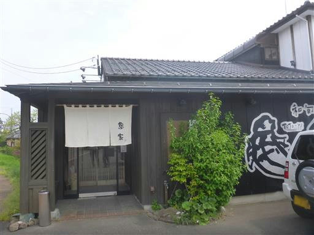
午後は少しだけ観光することにする。角田岬に行ってみる。
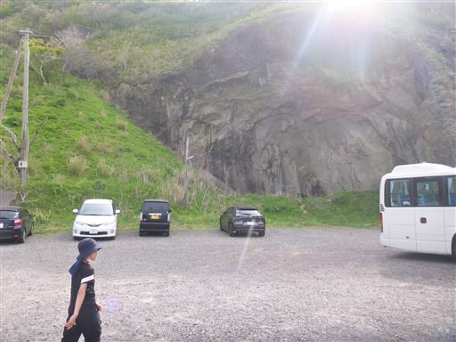
息子にとっては初めて見る日本海。
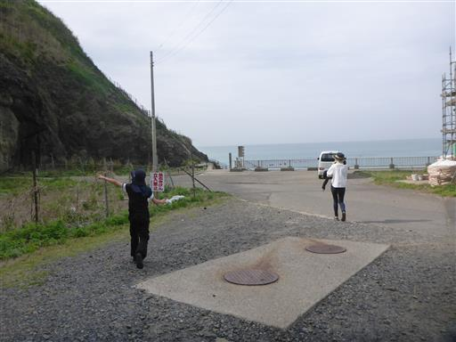
息子が怪しげな穴を発見。行ってみる。
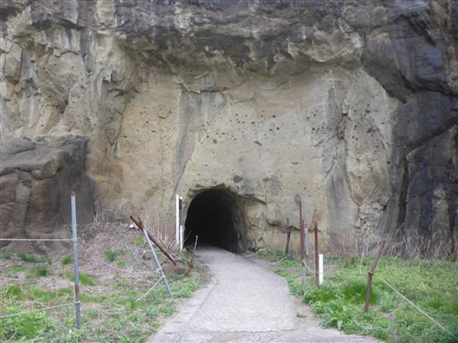
案内板によると海蝕洞とのこと。
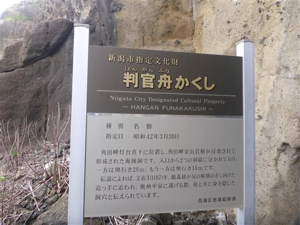
トンネルを歩く。海蝕洞にしてはずいぶんとまっすぐな道だ。
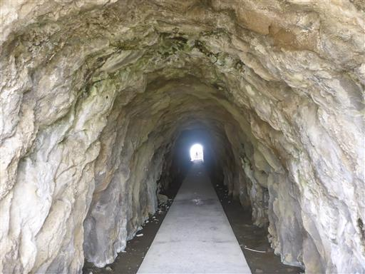
トンネルを抜けると荒々しい景色が広がる。
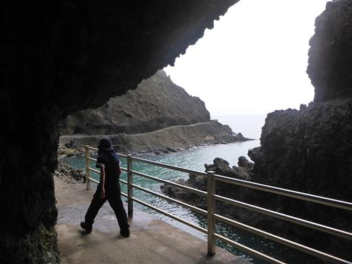
振り返ると2つの穴が見える。海蝕洞とはどうやらここのことのようだ。
トンネルの前に案内板を出すとはなんとも紛らわしい。
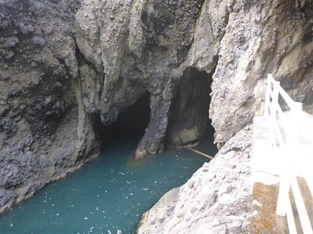
トンネルを抜けた先も遊歩道が続いている。
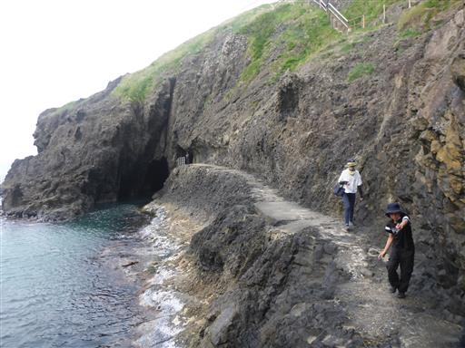
遊歩道の先までは歩かず、階段を登って灯台を目指す。
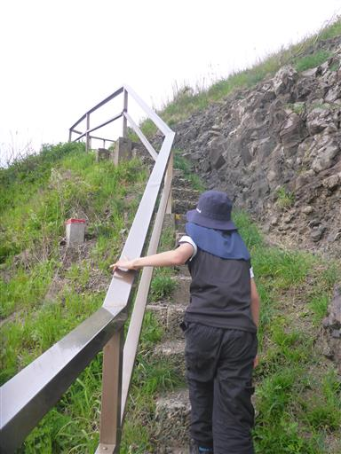
角田岬灯台に到着。
佐渡海峡を渡る船の道しるべのために作られたらしい。
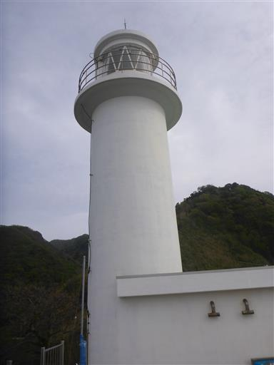
灯台から眺める日本海。残念ながら曇り空だ。
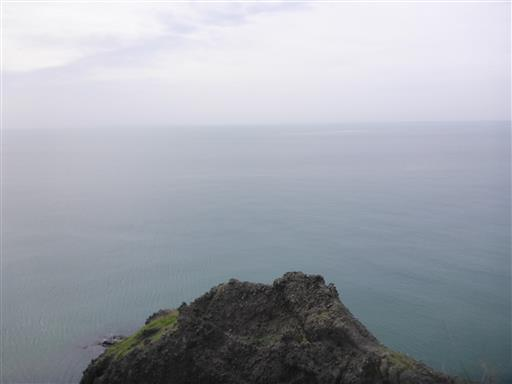
角田浜海水浴場を見下ろす。
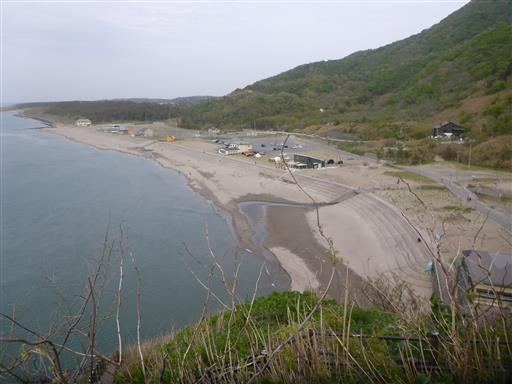
ホタルカズラの花が咲いている。
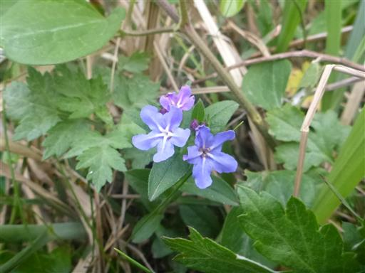
少し高台から角田岬灯台を見下ろす。この道はこのまま角田山へ通じている。
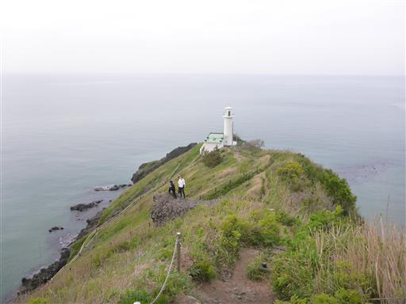
景色を堪能したら海岸に降りる。
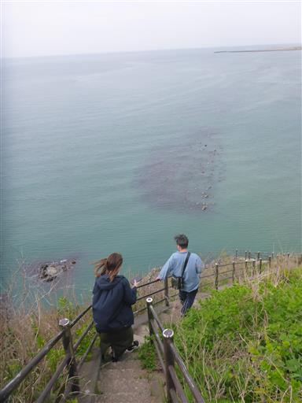
砂浜まで降りてくる。波は穏やかだ。
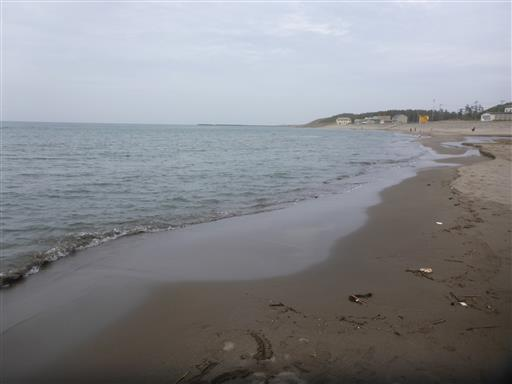
少し海と戯れる。
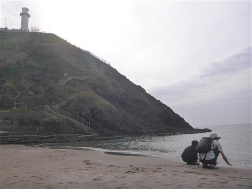
多宝温泉だいろの湯で風呂に入り、コンビニで買い物をしてキャンプ場に戻る。
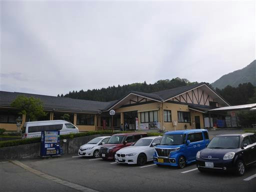